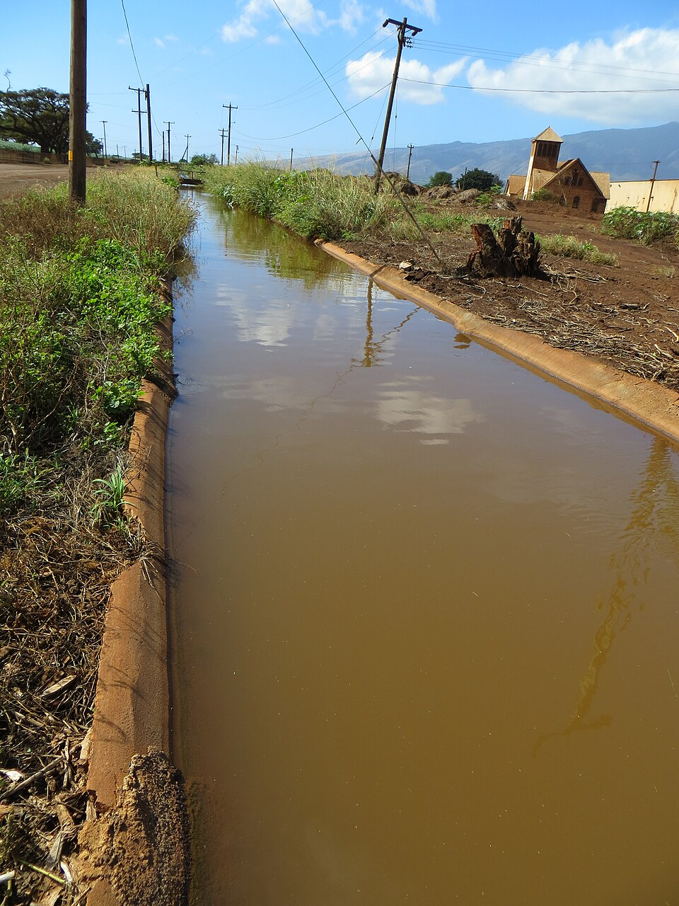

Coach Soichi Sakamoto Pool
Place: Coach Soichi Sakamoto Pool, Wailuku, Maui
Type: Public swimming pool / recreational facility
Namesake: Soichi Sakamoto (1906–1997), pioneering swimming coach and founder of the Three-Year Swim Club
Story it tells: How a Puʻunēnē schoolteacher trained children of sugar plantation workers in irrigation ditches, developing Olympic champions and leaving a lasting legacy in competitive swimming.

Soichi Sakamoto was born in Lahaina, Maui, in 1906 to Japanese immigrant parents. Although he possessed only survival swimming skills and had no formal coaching experience, Sakamoto would go on to become one of the most influential swimming coaches in American history. He taught at the Puʻunēnē School and eventually started working with children of sugar plantation workers who swam in irrigation ditches. In 1937, Sakamoto organized the Three-Year Swim Club, setting an ambitious goal of preparing his young swimmers to compete in the 1940 Olympic Games. He approached the goal like a scientist and developed unconventional training methods, using the currents of the irrigation canals to build strength and endurance. He also introduced carefully timed swimming intervals and exercises that would forever influence competitive swimming.
The Three-Year Swim Club brought together children from Maui's plantation communities, many from families with limited financial resources and few opportunities to participate in athletic competitions. Sakamoto trained them in the irrigation ditches near Puʻunēnē School, where the currents could move up to fifteen miles per hour. His unconventional methods began producing remarkable results, and by 1939 his swimmers were competing successfully against established teams on the mainland. Their achievements also attracted the attention of Olympic swimming champion Duke Kahanamoku, who had grown disappointed with the state of competitive swimming in Hawaiʻi following his own career. Sakamoto's young swimmers renewed his enthusiasm for the sport, and he became an encouraging supporter of the team. The Hawaiian Commercial & Sugar Company eventually provided the club with a swimming pool at Baldwin Park in 1940, after years of practicing in plantation canals.
Although World War II led to the cancellation of the 1940 and 1944 Olympic Games, Sakamoto's swimmers continued to achieve national and international success. Among his most accomplished students was Bill Smith, who won two gold medals at the 1948 London Olympics, while Ford Konno later won gold at the 1952 Helsinki Olympics. Other notable swimmers included Keo Nakama and Bill Woolsey, helping establish Hawaiʻi as a competitive swimming powerhouse. In 1946, Sakamoto moved to Oʻahu, where he became the swimming coach at the University of Hawaiʻi and continued developing athletes for national and international competition. His contributions to the sport were recognized in 1966 when he was inducted into the International Swimming Hall of Fame.
Sakamoto died in 1997 at the age of 91, and later that year Maui County renamed the public swimming facility at Wailuku's War Memorial Complex the Coach Soichi Sakamoto Pool in his honor. Although the facility was not where he trained his original Three-Year Swim Club, its name preserves the legacy of a coach whose achievements began in the irrigation ditches of Puʻunēnē. His innovative training methods and belief in the potential of children from plantation communities helped reinvigorate competitive swimming in Hawaiʻi and beyond. His remarkable story was later documented in Julie Checkoway's 2015 book, The Three-Year Swim Club, which beautifully tells his story and further honors his legacy.